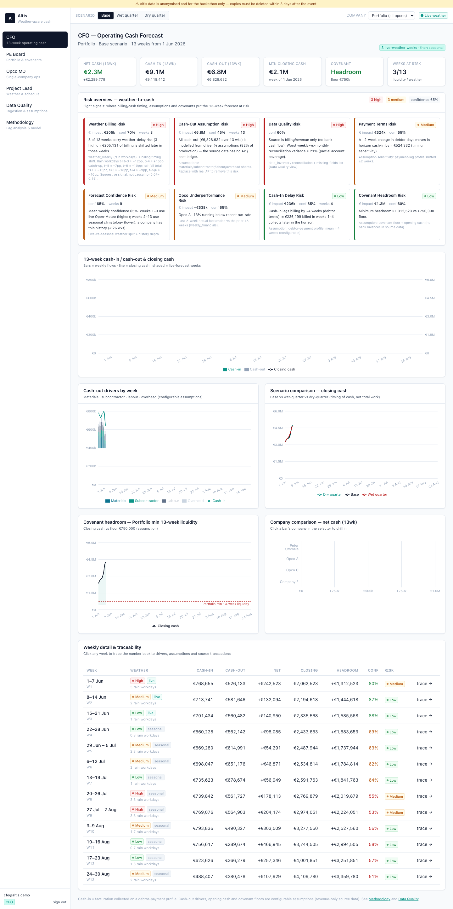

Weather-Aware
13-Week Cashflow Platform
How will cash move over the next 13 weeks — and how does the weather delay billing and tighten covenant headroom?
The CFO can't answer one simple question
“How much cash will be in the account in eight weeks?”
4 operating companies
One PE-backed roofing portfolio, run as four independent opcos.
4 different systems
Snelstart, Exact-style GL, Gilde, an invoice register — none talk to each other.
Billing slips when it rains
Bad roofing weather delays execution, milestones and invoicing.
~4 weeks of debtor lag
Payment terms push cash even later — against fixed covenant floors.
Cash arrives late exactly when liquidity is tightest — wet winters and early spring.
Bad weather doesn't destroy revenue — it delays cash
Weather risk
3+ rain workdays in a week = high delay risk
Work / milestone delay
Execution and milestones slip
Billing delay
Invoices go out 3–5 weeks later
Cash-in delay
Convolved with ~4-week payment terms
A wet week is followed, on average, by below-baseline billing 3–5 weeks later, then a partial catch-up around week 7. We shift timing, never volume.
One weather-aware billing-to-cash platform

Four systems → one reconciled model
Content-hash deduplication
Identical re-exports collapse to one row; the .3 files were exact duplicates, the .2 files held different accounts and were kept. Filename-based skipping would have been wrong.
A 6-layer forecast — pure, testable, explainable
Pure TypeScript function — no database side-effects, runs on every page load, covered by unit tests. 15 tests green (7 engine + 8 pipeline).
Base · Wet quarter · Dry quarter
~€281k deferred
In the wet-quarter scenario, roughly €281,000 of billing is pushed beyond the 13-week horizon — tracked as spillover, not lost.
Timing shifts. Total volume of work doesn't change.
8 weather-to-cash risk signals
Each: level · EUR impact · confidence · plain-English reason · trace to source.
Weather Billing Risk
Cash-In Delay
Payment Terms
Cash-Out Assumption
Covenant Headroom
Data Quality
Forecast Confidence
Opco Underperformance
Every card answers three questions: what's flagged, why, and what to do next.
One model, the right view for every stakeholder
CFO
13-week operating cash, 8 risk cards, scenarios, trace drawer
PE Board
Portfolio outlook, companies-at-risk, covenant story
Opco MD
Single company, weather calendar, ops recommendations
Project Lead
Bad-weather windows, billing-timing shifts
Map
Locations + weather-risk markers
Agent
Ask the forecast a question
API connectors
Exact · SnelStart · Gilde plumbing
Data Quality
Lineage, dedup, reconciliation
Methodology
Every assumption + lag analysis
Admin
Users, RBAC, data purge
5 RBAC roles behind Supabase Auth — each role's routes and navigation are gated by middleware.ts.
Every euro traces back to source

Click any week → the trace drawer opens. No black box.
Portfolio risk on the map
Markers coloured by risk
Each marker shows company, source system, the rain / bad-workday outlook, and estimated cash-timing impact — and links straight to the Opco or Project view.
Built with Leaflet on the web and native MapKit on iOS — same data contract.
Ask the forecast a question
- Tight opening cash (€200k) against a €200k covenant floor
- Wet quarter compresses headroom toward zero
- ~€281k of portfolio billing deferred beyond week 13
Retrieval over internal data
Answers come from the forecast engine, weather rows, source inventory and connector registry — every answer cites its sources.
Native iOS — same backend, same accounts


A board member can check covenant headroom from their phone before a lender call.
The stack
The CFO sees the main risk in 10 seconds
Drill from portfolio → opco → individual week → source transaction — and switch base / wet / dry to see cash timing move live.
Weather-aware billing-to-cash,
end to end.
4 companies · 4 systems · 1 reconciled 13-week forecast · a weather risk overlay · full traceability · web + native iOS.
Bad weather delays cash — it doesn't destroy revenue. Every assumption is labelled. Nothing is a black box.
Thank you — questions welcome.